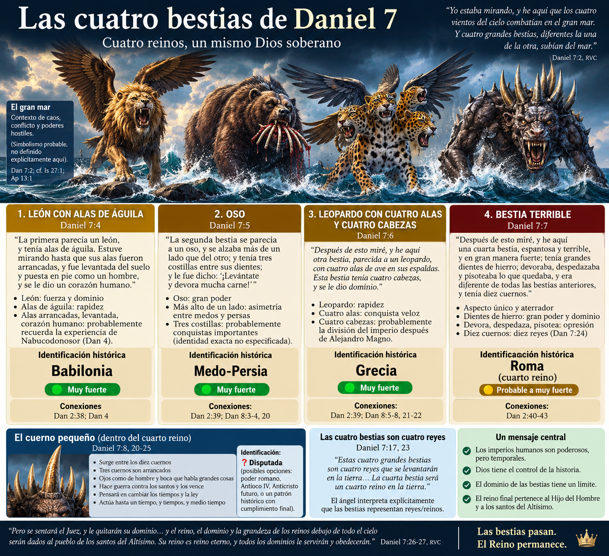
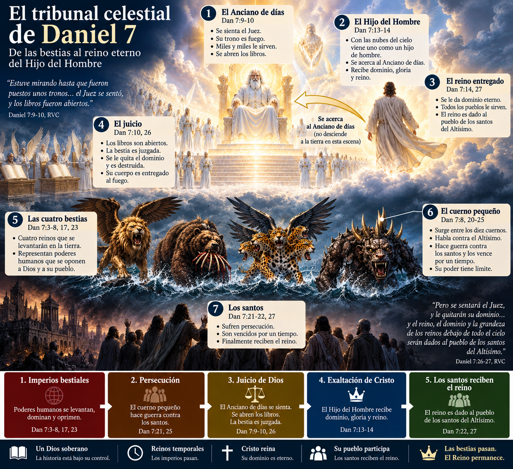
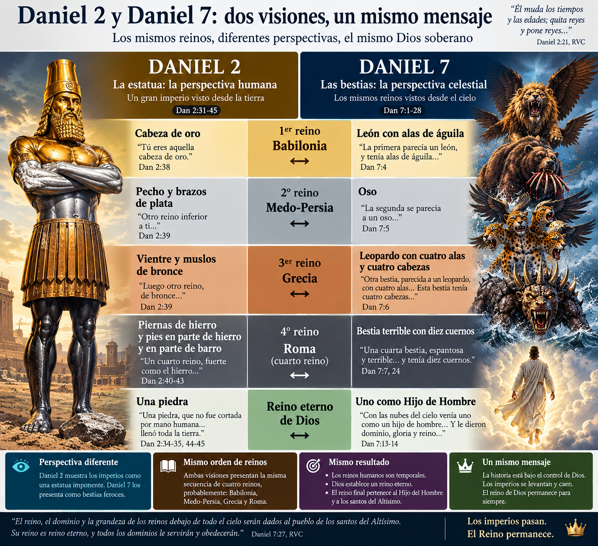
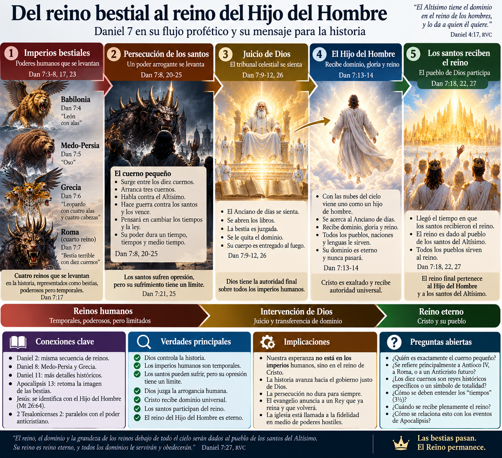

Daniel 7 es uno de los capítulos decisivos para comprender la escatología bíblica. Aquí aparecen cuatro bestias, diez cuernos, un cuerno pequeño, el Anciano de días, un tribunal celestial, uno como hijo de hombre y los santos recibiendo el reino.
Además, el capítulo se convierte en un puente fundamental entre Daniel 2, las enseñanzas de Jesús y Apocalipsis.
Pero precisamente por su importancia debemos resistir la tentación de comenzar preguntando:
“¿Quién es el Anticristo?”
La primera pregunta debe ser otra:
¿Qué quiso comunicar esta visión dentro del propio libro de Daniel?
Nuestro recorrido será:
texto → contexto → símbolos → antecedentes bíblicos → conexiones → interpretaciones → conclusiones
Daniel 7 marca un punto de transición muy importante.
En Daniel 1–6 predominan relatos acerca de Daniel y sus compañeros bajo gobiernos extranjeros. Daniel 7–12 concentra una serie de visiones proféticas.
Sin embargo, Daniel 7 está profundamente conectado con Daniel 2.
Nabucodonosor ve:
estatua → cuatro reinos → piedra → reino de Dios
Daniel ve:
cuatro bestias → juicio celestial → Hijo del Hombre → reino eterno
La estructura básica es extraordinariamente semejante.
Esto constituye una de nuestras primeras conclusiones:
🟢 Daniel 7 probablemente vuelve a presentar la secuencia de cuatro reinos de Daniel 2, pero desde otra perspectiva.
Daniel 2 observa los imperios como una impresionante estatua humana.
Daniel 7 los presenta como bestias monstruosas.
La diferencia parece deliberada.
Daniel fecha la visión:
“En el primer año de Belsasar, rey de Babilonia…”
— Daniel 7:1, RVC
Narrativamente, esto significa que Daniel 7 retrocede respecto de Daniel 6.
Belsasar todavía gobierna Babilonia.
El imperio babilónico aún no ha caído ante los medos y persas.
Daniel recibe entonces una visión acerca de una sucesión de poderes humanos que culminará, no simplemente en otro imperio, sino en el establecimiento del gobierno de Dios.
Esto es importante.
La visión fue recibida desde una situación en la que el pueblo de Dios estaba sometido a poderes gentiles.
La pregunta implícita es:
¿Quién gobierna realmente la historia cuando los imperios parecen dominarla?
Daniel 7 responde desde la perspectiva celestial.
Daniel contempla:
“los cuatro vientos del cielo combatían en el gran mar.”
— Daniel 7:2
Y del mar aparecen cuatro grandes bestias.
No debemos asumir automáticamente que cada elemento posee un significado independiente.
Pero dentro del imaginario bíblico, el mar puede asociarse con caos, amenaza y poderes hostiles.
Hay antecedentes importantes:
Sin embargo:
🟡 Es probable que el mar contribuya a la atmósfera de caos y conflicto de la visión.
🟠 Es más discutible identificarlo aquí específicamente con “las naciones gentiles” como si Daniel 7:2 proporcionara directamente esa definición.
Debemos permitir que el propio ángel explique los símbolos principales.
Y eso sucede.

Afortunadamente Daniel 7 contiene su propia interpretación.
“Estas cuatro grandes bestias son cuatro reyes que se levantarán en la tierra.”
— Daniel 7:17
Posteriormente:
“La cuarta bestia será un cuarto reino en la tierra…”
— Daniel 7:23
Por tanto:
🟢 Las cuatro bestias representan cuatro reyes/reinos.
No necesitamos especular sobre esto.
En la literatura bíblica, un rey puede representar corporativamente al reino que gobierna.
Y esto confirma todavía más la relación con Daniel 2.
Daniel ve:
“La primera parecía un león, y tenía alas de águila…”
— Daniel 7:4
Después sus alas son arrancadas, es levantada del suelo, puesta sobre dos pies como hombre y recibe corazón humano.
La identificación tradicional y probablemente más fuerte es:
Esto encaja con Daniel 2, donde el primer reino es explícitamente el de Nabucodonosor:
“Tú eres aquella cabeza de oro.”
— Daniel 2:38
Además, Babilonia utiliza imágenes de leones en su iconografía imperial, aunque este dato por sí solo no demuestra la interpretación.
Más importante es la secuencia literaria.
Si Daniel 7 corresponde a Daniel 2, la primera bestia debe representar el reino babilónico.
Aquí debemos ser cuidadosos.
La descripción recuerda notablemente la experiencia de Nabucodonosor en Daniel 4:
humano → bestial → restauración → humanidad recuperada
Mientras que Daniel 7 presenta:
bestia → levantada → posición humana → corazón humano
Por eso:
🟡 Es probable que Daniel 7:4 evoque la humillación y restauración de Nabucodonosor narrada en Daniel 4.
Pero el texto no lo declara explícitamente.
La segunda bestia:
“se parecía a un oso, y se alzaba más de un lado que del otro…”
— Daniel 7:5
Tenía tres costillas entre sus dientes y recibe la orden:
“¡Levántate y devora mucha carne!”
La interpretación más natural dentro de la secuencia que vimos en Daniel 2 es:
La característica intrigante es que está levantado de un lado.
Esto suele relacionarse con la desigualdad entre medos y persas, especialmente con la posterior predominancia persa.
Daniel 8 ofrece un paralelo interesante.
El carnero que representa explícitamente:
“los reyes de Media y de Persia”
tiene dos cuernos, pero uno era más alto que el otro.
Por eso:
🟡 La asimetría del oso probablemente refleja la naturaleza desigual de la alianza medo-persa.
Aquí debemos frenar.
Se han propuesto diferentes identificaciones:
Pero Daniel no las interpreta.
Por tanto:
🟠 Puede tratarse de conquistas importantes del imperio.
🔴 Identificar dogmáticamente cada costilla con una nación concreta supera lo explícito del texto.
❓ La identidad exacta de las tres costillas queda abierta.
Daniel contempla una tercera bestia:
“parecida a un leopardo, con cuatro alas de ave en sus espaldas. Esta bestia tenía cuatro cabezas…”
— Daniel 7:6
Y recibe dominio.
La identificación histórica más fuerte es:
Especialmente el imperio asociado con Alejandro Magno.
El simbolismo parece enfatizar velocidad extraordinaria.
Leopardo + cuatro alas produce una imagen de conquista veloz.
Esto encaja notablemente con la rápida expansión macedónica bajo Alejandro.
Pero todavía más importante son las cuatro cabezas.
Daniel 8 ofrece nuevamente una clave interpretativa.
Después de la muerte del gran rey griego:
“cuatro reinos se levantarán de esa nación…”
— cf. Daniel 8:21-22
Por eso:
🟢 Las cuatro cabezas probablemente corresponden a la fragmentación del imperio griego después de Alejandro.
No significa necesariamente que debamos reducir toda la historia helenística exactamente a cuatro individuos.
La visión trabaja con reinos y divisiones imperiales.
Aquí cambia completamente el tono.
Daniel no puede compararla con ningún animal conocido.
Es:
“espantosa y terrible, y en gran manera fuerte…”
— Daniel 7:7
Tiene:
El hierro crea inmediatamente una conexión con Daniel 2.
La cuarta parte de la estatua posee piernas de hierro.
Esto fortalece considerablemente el paralelismo.
Dentro de la lectura tradicional:
La secuencia sería:
Babilonia → Medo-Persia → Grecia → Roma
Esta interpretación posee una fuerte coherencia entre Daniel 2, 7 y 8.
Sin embargo, existe otra reconstrucción histórica importante.
Algunos intérpretes proponen:
Babilonia → Media → Persia → Grecia
En esa lectura, la cuarta bestia sería el imperio griego y el cuerno pequeño estaría especialmente relacionado con Antíoco IV Epífanes.
La cuestión depende en gran medida de si Daniel considera Media y Persia como dos imperios sucesivos o como una misma realidad medo-persa.
Daniel 8 identifica conjuntamente:
“los reyes de Media y de Persia”
como el carnero.
Además, la secuencia de Daniel 8 pasa directamente:
Medo-Persia → Grecia
Esto favorece considerablemente:
🟢 Babilonia → Medo-Persia → Grecia → cuarto reino posterior
Y dentro del horizonte histórico conocido, Roma constituye la identificación más natural del cuarto imperio.
Aun así, debemos distinguir esto de otra pregunta:
¿Toda la actividad de la cuarta bestia y sus cuernos queda agotada históricamente en la Roma antigua?
Eso todavía no está resuelto.
❓ Lo dejaremos abierto.
La cuarta bestia tiene:
“diez cuernos.”
— Daniel 7:7
Esta vez el ángel explica:
“Los diez cuernos significan que de aquel reino se levantarán diez reyes…”
— Daniel 7:24
Por tanto:
🟢 Los diez cuernos representan diez reyes/poderes gobernantes asociados con el cuarto reino.
Pero inmediatamente surge una dificultad.
¿Son literalmente diez gobernantes históricos?
¿Representan totalidad de poderes?
¿Son gobernantes contemporáneos?
¿Una fase posterior del cuarto reino?
Daniel parece describir una secuencia:
cuarta bestia → diez cuernos → otro cuerno
Pero todavía no debemos convertirla automáticamente en una cronología moderna.
Daniel observa:
“otro cuerno pequeño…”
que aparece entre los diez.
Tres cuernos son arrancados delante de él.
Este nuevo cuerno posee:
Daniel queda especialmente preocupado por él.
Más adelante recibe la interpretación.
El cuerno:
“hablará palabras contra el Altísimo…”
y:
“quebrantará a los santos del Altísimo…”
— Daniel 7:25
También:
“pensará en cambiar los tiempos y la ley…”
Aquí aparece uno de los personajes más importantes de la escatología de Daniel.
Daniel ve algo sorprendente:
“aquel cuerno hacía guerra contra los santos, y los vencía…”
— Daniel 7:21
Esto significa que el poder arrogante recibe temporalmente capacidad para oprimir al pueblo de Dios.
Pero la frase siguiente transforma toda la escena:
“hasta que vino el Anciano de días…”
— Daniel 7:22
Ese “hasta” es teológicamente crucial.
El dominio de la bestia tiene límite.
La persecución tiene límite.
La arrogancia imperial tiene límite.
La historia no termina con los santos derrotados.
De repente Daniel deja de mirar la tierra.
La escena cambia al cielo.
“Estuve mirando hasta que fueron puestos unos tronos, y se sentó un Anciano de días…”
— Daniel 7:9
Su ropa es blanca como nieve.
Su cabello como lana limpia.
Su trono es fuego.
Miles y miles le sirven.
Entonces:
“el Juez se sentó, y los libros fueron abiertos.”
— Daniel 7:10
Aquí encontramos una escena de tribunal celestial.
La cuestión central ya no es:
¿Qué imperio tiene el ejército más poderoso?
Sino:
¿Quién posee autoridad para juzgar a los imperios?
La respuesta de Daniel es inequívoca.
🟢 Dios posee la autoridad final sobre todos los poderes humanos.
Mientras el cuerno continúa pronunciando palabras arrogantes, Daniel contempla el juicio.
La bestia es destruida.
Su cuerpo es entregado al fuego.
Esto crea un contraste deliberado:
la bestia habla → Dios juzga
la bestia persigue → Dios interviene
la bestia pretende dominio → Dios le quita el dominio
Daniel 7:26 lo resume:
“Pero se sentará el Juez, y le quitarán su dominio…”
El centro del capítulo no es el poder del cuerno.
Es el límite que Dios impone a su poder.
Llegamos al centro cristológico de la visión.
Daniel contempla:
“con las nubes del cielo venía uno como un hijo de hombre…”
— Daniel 7:13
Se acerca al Anciano de días.
Y recibe:
“dominio, gloria y reino…”
Todos los pueblos, naciones y lenguas le sirven.
Su dominio:
“es dominio eterno, que nunca pasará…”
— Daniel 7:14
El contraste es extraordinario.
Los imperios aparecen como bestias.
El gobernante definitivo aparece como humano.
representan dominio deshumanizado.
representa el gobierno humano conforme al propósito de Dios.
Pero el personaje parece ser más que simplemente un ser humano ordinario.
Este detalle es crucial.
En el Antiguo Testamento, cabalgar o venir sobre las nubes es lenguaje asociado repetidamente con Dios.
Por ejemplo:
“El Señor cabalga sobre una nube veloz…”
— Isaías 19:1
También encontramos imágenes relacionadas en:
Por eso:
🟢 Daniel presenta al Hijo del Hombre con características extraordinariamente exaltadas.
🟡 El lenguaje de las nubes probablemente participa de imágenes veterotestamentarias asociadas con la manifestación y autoridad divinas.
Esto será fundamental cuando Jesús utilice Daniel 7 para hablar de sí mismo.

Aquí debemos corregir una lectura popular.
Daniel 7:13 no describe inicialmente al Hijo del Hombre bajando del cielo hacia la tierra.
Daniel dice:
“vino hasta el Anciano de días…”
El movimiento de la visión es:
Hijo del Hombre → Anciano de días
Es decir, se acerca al tribunal celestial y recibe autoridad.
Por tanto:
🟢 En su contexto inmediato, Daniel 7:13 describe la presentación/entronización celestial del Hijo del Hombre ante Dios.
Esto no significa que el texto sea irrelevante para la segunda venida.
El NT reutilizará este lenguaje escatológicamente.
Pero debemos comenzar por lo que Daniel realmente ve.
Aquí aparece una cuestión fascinante.
Daniel 7:14 dice que el Hijo del Hombre recibe el reino.
Pero Daniel 7:18 dice:
“los santos del Altísimo recibirán el reino…”
Y Daniel 7:27:
“el reino… será dado al pueblo de los santos del Altísimo…”
Entonces tenemos:
Hijo del Hombre recibe el reino
y
los santos reciben el reino
¿Cómo se relacionan?
Una posibilidad importante es la representación corporativa.
El Hijo del Hombre representa al pueblo santo, pero simultáneamente aparece como una figura individual diferenciada que recibe el reino en nombre de ellos.
Esto tiene antecedentes bíblicos.
Un rey puede representar corporativamente a su pueblo.
Por eso:
🟢 Existe una relación intencional entre el Hijo del Hombre y los santos.
🟡 La explicación más completa parece ser representativa/corporativa: una figura individual representa y comparte su reino con el pueblo de Dios.
El NT desarrollará enormemente esta idea alrededor de Cristo.
Aquí la conexión se vuelve explícita.
Jesús adopta repetidamente el título:
“Hijo del Hombre”
No todas las apariciones necesariamente aluden exclusivamente a Daniel 7, pero en determinados textos la conexión es inequívoca.
Especialmente durante su juicio.
Jesús declara:
“verán al Hijo del Hombre sentado a la derecha del Poderoso, y viniendo en las nubes del cielo.”
— cf. Mateo 26:64
Aquí Jesús combina:
“Siéntate a mi derecha…”
con
“con las nubes del cielo…”
Esto es extraordinariamente importante para la cristología del NT.
Jesús se identifica con la figura que recibe del Anciano de días:
dominio + gloria + reino universal
Por tanto:
🟢 El NT identifica a Jesús con el Hijo del Hombre de Daniel 7.
Aquí comienza un debate escatológico importante.
Existen varias posibilidades.
Daniel 7:13-14 encuentra cumplimiento fundamental en:
resurrección → ascensión → exaltación → reinado de Cristo
Hechos 2, Salmo 110 y otros textos apoyan fuertemente la entronización presente de Cristo.
🟢 El NT enseña claramente que Cristo ya ha sido exaltado y reina.
Otros enfatizan que Daniel 7 incluye:
Por tanto, consideran que su cumplimiento culmina en el regreso de Cristo.
🟢 El NT también utiliza lenguaje de Daniel 7 para la venida futura de Cristo.
No necesariamente debemos escoger entre ambas.
La estructura del NT permite:
entronización inaugurada → reinado presente → manifestación futura
Por eso:
🟢 Cristo ya posee autoridad real.
🟢 Su dominio todavía será manifestado plenamente.
Esta tensión entre “ya” y “todavía no” aparecerá repetidamente en nuestra escatología.
Daniel 7:25 declara que los santos serán entregados al poder del cuerno:
“hasta un tiempo, y tiempos, y medio tiempo.”
La expresión probablemente corresponde a:
1 + 2 + ½ = 3½
Este período reaparecerá conceptualmente en Daniel y Apocalipsis.
Apocalipsis utilizará expresiones equivalentes:
Esto es demasiado consistente para ser accidental.
🟢 Existe una conexión literaria fuerte entre Daniel y Apocalipsis respecto de este período.
Pero su significado exacto todavía requiere estudio.
¿Son literalmente tres años y medio?
¿Un período simbólico de persecución limitada?
¿Ambas cosas en diferentes niveles?
❓ Lo dejamos abierto.
No debemos resolver Apocalipsis antes de estudiarlo.
La influencia de Daniel 7 sobre Apocalipsis es enorme.
Daniel ve sucesivamente:
león + oso + leopardo + bestia terrible
Apocalipsis 13 presenta una bestia compuesta:
semejante a un leopardo, pies como oso y boca como león.
Juan parece recoger las bestias de Daniel y fusionarlas.
Esto sugiere que la bestia de Apocalipsis representa la concentración o continuación del patrón de los imperios bestiales de Daniel.
Por tanto:
🟢 Apocalipsis 13 reutiliza deliberadamente Daniel 7.
Pero todavía no debemos identificar definitivamente la bestia de Apocalipsis.
Eso pertenece a estudios posteriores.

Ahora podemos colocar ambos capítulos en paralelo.
| Daniel 2 | Daniel 7 |
|---|---|
| Cabeza de oro | León |
| Pecho y brazos | Oso |
| Vientre y muslos | Leopardo |
| Hierro | Bestia terrible |
| Reino humano dividido | Diez cuernos |
| Piedra | Hijo del Hombre |
| Reinos destruidos | Bestia juzgada |
| Reino eterno | Santos reciben el reino |
La correspondencia general es muy fuerte.
Pero existe una diferencia teológica preciosa.
Los imperios forman una estatua magnífica.
Los mismos poderes parecen bestias.
Esto podría expresar una crítica teológica del poder imperial.
Cuando el gobierno humano se absolutiza, oprime y pretende ocupar el lugar de Dios, se vuelve bestial.
Aquí puede existir una conexión con Génesis 1.
En la creación:
los seres humanos deben gobernar sobre las bestias.
Pero en Daniel 7 ocurre una inversión.
Los imperios humanos se convierten simbólicamente en bestias.
Finalmente aparece:
uno como hijo de hombre
y recibe el verdadero dominio.
Esto sugiere:
🟡 Daniel 7 puede estar presentando la restauración del verdadero gobierno humano bajo Dios frente al dominio bestial de los imperios.
No debemos convertir esto en una conexión dogmática explícita con Génesis 1.
Pero conceptualmente encaja muy bien con la teología bíblica del dominio humano.
Y en Cristo adquiere enorme profundidad:
el verdadero Hombre recibe el reino que los imperios bestiales pretendían poseer.
Aquí debemos distinguir cuidadosamente varias posiciones.
Muchos intérpretes relacionan al cuerno con Antíoco IV, perseguidor del pueblo judío en el siglo II a.C.
Daniel 8 y 11 ciertamente contienen material fuertemente relacionado con Antíoco.
Fortaleza: existen paralelos reales.
Dificultad: en Daniel 7 el cuerno surge del cuarto reino, mientras que dentro de la secuencia Babilonia → Medo-Persia → Grecia → Roma, Antíoco pertenece al tercero.
🟠 Su relación exacta con Daniel 7 es discutida.
Otros consideran al cuerno como algún gobernante o manifestación particular del poder romano.
Fortaleza: mantiene la secuencia de los cuatro imperios.
Dificultad: identificar satisfactoriamente diez reyes + tres desplazados + un gobernante específico resulta complejo.
🟠 Disputado.
La interpretación futurista considera al cuerno como una figura final que aparecerá antes del regreso de Cristo.
Encuentra conexiones con:
Las semejanzas son significativas:
blasfemia + persecución + dominio limitado + juicio divino
🟡 Existe una fuerte trayectoria bíblica que conecta el patrón de Daniel 7 con un poder final anticristiano.
Pero:
🟠 Daniel 7 por sí solo no explica todos los detalles de una doctrina desarrollada del “Anticristo”.
Otra posibilidad entiende el cuerno como parte de un patrón:
poder imperial arrogante → persecución → juicio
que puede manifestarse históricamente y alcanzar posteriormente una culminación escatológica.
Esta lectura tiene la ventaja de tomar en serio tanto el contexto histórico como la reutilización posterior de Daniel.
🟡 Es una posibilidad hermenéuticamente fuerte.
Pero todavía necesitamos Daniel 8, 9, 11, las palabras de Jesús, Pablo y Apocalipsis antes de llegar a una conclusión definitiva.
❓ Mapa Escatológico abierto.
Este punto suele perderse porque toda la atención se concentra en las bestias.
Daniel repite varias veces que:
los santos reciben el reino.
Daniel 7:18:
“recibirán el reino los santos del Altísimo…”
Daniel 7:22:
“llegó el tiempo en que los santos recibieron el reino.”
Daniel 7:27:
“el reino… será dado al pueblo de los santos del Altísimo.”
El movimiento del capítulo es:
bestias dominan
↓
santos sufren
↓
Dios juzga
↓
Hijo del Hombre recibe el reino
↓
los santos participan del reino
La escatología de Daniel no trata simplemente de destruir enemigos.
Trata de transferir el dominio.
Aquí Daniel 7 alcanza su mayor profundidad desde la perspectiva del NT.
Jesús es presentado como:
el Hijo del Hombre.
Él sufre bajo poderes humanos.
Es rechazado.
Es condenado.
Muere.
Pero Dios lo levanta.
Lo exalta.
Le entrega autoridad.
Y su pueblo comparte su reino.
El patrón de Daniel 7 encuentra entonces una expresión sorprendente en el evangelio:
sufrimiento → vindicación → reino
Primero en Cristo.
Después en quienes pertenecen a Cristo.
Esto explica por qué Apocalipsis puede llamar a los creyentes a perseverar bajo poderes bestiales.
Su esperanza no depende de dominar políticamente a las bestias.
Depende del reinado del Cordero.
| Afirmación | Evaluación |
|---|---|
| Las cuatro bestias representan cuatro reyes/reinos | 🟢 Muy fuerte |
| Daniel 7 corresponde estructuralmente con Daniel 2 | 🟢 Muy fuerte |
| La primera bestia representa Babilonia | 🟢 Muy fuerte |
| La segunda representa Medo-Persia | 🟢 Muy fuerte |
| La tercera representa Grecia | 🟢 Muy fuerte |
| La cuarta corresponde al cuarto reino de Daniel 2 | 🟢 Muy fuerte |
| El cuarto reino histórico es Roma | 🟡 Probable a muy fuerte |
| Las cuatro cabezas se relacionan con la división del imperio griego | 🟢 Muy fuerte |
| Los diez cuernos representan diez gobernantes | 🟢 Muy fuerte |
| Las tres costillas representan exactamente tres naciones identificables | 🔴 Especulativo |
| El cuerno pequeño representa exclusivamente a Antíoco IV | 🟠 Disputado |
| El cuerno pequeño posee una dimensión escatológica posterior | 🟡 Probable |
| Puede identificarse ya cada detalle del cuerno con un futuro Anticristo | 🟠 Disputado |
| El Hijo del Hombre recibe dominio universal de Dios | 🟢 Muy fuerte |
| Jesús se identifica con el Hijo del Hombre de Daniel 7 | 🟢 Muy fuerte |
| Daniel 7:13 describe inicialmente movimiento hacia el Anciano de días | 🟢 Muy fuerte |
| Cristo ya ha sido exaltado y entronizado | 🟢 Muy fuerte |
| El reino tendrá una manifestación futura plena | 🟢 Muy fuerte |
| Los santos participan del reino del Hijo del Hombre | 🟢 Muy fuerte |
| Los 3½ tiempos deben interpretarse necesariamente como 3½ años literales futuros | 🟠 Disputado |

Después de Daniel 7 podemos agregar varias piezas sin cerrar todavía el sistema.
La historia humana está bajo la soberanía de Dios.
Los imperios humanos son temporales.
Existe una secuencia profética de cuatro grandes poderes.
Daniel 2 y Daniel 7 describen probablemente la misma secuencia desde perspectivas diferentes.
El cuarto reino posee especial importancia escatológica.
Dentro de ese contexto aparece un poder arrogante perseguidor.
Dios establece un tribunal celestial y juzga ese poder.
El Hijo del Hombre recibe dominio universal y eterno.
Los santos participan de ese reino.
Jesús se identifica con ese Hijo del Hombre.
El NT reutiliza Daniel 7 para comprender tanto la exaltación de Cristo como acontecimientos escatológicos futuros.
La secuencia histórica:
Babilonia → Medo-Persia → Grecia → Roma
El cuerno pequeño forma parte de un patrón de oposición que posee relevancia para la escatología posterior.
La visión contiene una tensión entre reinado inaugurado y consumación futura.
La identidad exacta de los diez cuernos.
La identidad histórica exacta del cuerno pequeño.
La relación precisa entre el cuerno pequeño, Antíoco, Roma y el Anticristo escatológico.
La naturaleza exacta de los “tiempos”.
¿Habrá un Anticristo individual final?
¿Será literalmente un gobernante político?
¿Los diez reyes son pasados o futuros?
¿Existe una continuación escatológica particular del cuarto imperio?
¿Los 3½ tiempos son literales, simbólicos o ambos?
¿En qué momento exacto los santos “reciben el reino”?
Estas preguntas deben permanecer abiertas hasta estudiar más textos.
Daniel 7 no fue dado principalmente para satisfacer curiosidad acerca de monstruos proféticos.
Su mensaje es mucho más profundo.
Los imperios parecen invencibles desde abajo.
Pero Daniel recibe permiso para mirar la historia desde el tribunal de Dios.
Y desde allí todo cambia.
Las bestias tienen fecha de vencimiento.
El perseguidor habla arrogantemente, hasta que Dios juzga.
Los santos parecen derrotados, hasta que reciben el reino.
Y sobre todos los imperios aparece una figura humana:
uno como Hijo del Hombre.
Las bestias reciben dominio temporal.
Cristo recibe dominio eterno.
Las bestias conquistan mediante violencia.
Cristo recibe el reino del Padre.
Las bestias desaparecen.
Su reino:
“no será destruido.”
Por eso, el centro escatológico de Daniel 7 no es el cuerno pequeño.
Es el Hijo del Hombre.